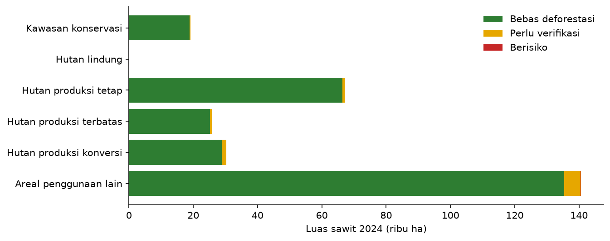

Pengecekan Kepatuhan EUDR Kebun Sawit di Kabupaten Bengkalis, Riau
Latar belakang
Uni Eropa menerbitkan Regulasi Bebas Deforestasi (EU Deforestation Regulation atau EUDR) yang mewajibkan tujuh komoditas, termasuk minyak sawit, terbukti tidak berasal dari lahan yang mengalami deforestasi setelah 31 Desember 2020. Produk tersebut juga harus diproduksi secara legal menurut hukum negara asalnya. Untuk membuktikannya, setiap kebun harus disertai lokasi yang jelas, berupa poligon batas kebun untuk kebun lebih dari 4 hektare atau titik koordinat untuk kebun yang lebih kecil.
Bagi Indonesia, aturan ini sangat penting karena Uni Eropa adalah salah satu pasar utama minyak sawit. Eksportir, perusahaan perkebunan, dan koperasi petani kini perlu mengecek ribuan kebun satu per satu terhadap peta hutan dan peta kawasan hutan. Riau adalah provinsi dengan kebun sawit terluas di Indonesia, sehingga menjadi tempat yang tepat untuk melihat seberapa besar tantangan ini sebenarnya.
Project ini menjawab dua pertanyaan. Berapa banyak kebun sawit di Kabupaten Bengkalis yang berisiko tidak lolos syarat bebas deforestasi EUDR? Dan apakah deforestasi memang menjadi hambatan utama, atau justru ada masalah lain yang lebih besar? Hasilnya juga dikemas menjadi aplikasi yang bisa dipakai untuk mengecek kebun mana pun di Bengkalis.
Buka aplikasi Pengecek EUDR Sawit
Aplikasi di atas bisa langsung dicoba. Tekan "Contoh kebun" untuk memuat 13 kebun fiktif, atau unggah file GeoJSON, shapefile (.zip), atau CSV berisi koordinat kebun. Hasilnya bisa diunduh sebagai tabel CSV.
Data yang digunakan
| Data | Format Data | Jenis Data | Sumber |
|---|---|---|---|
| Peta tutupan hutan 2020 (GFC2020 V4, 10 m) | Raster | Sekunder | Joint Research Centre (JRC), Komisi Eropa |
| Peta sebaran sawit 2020 dan 2024 | Raster | Sekunder | Forest Data Partnership (model 2026a) |
| Kehilangan tutupan pohon per tahun, 2021–2025 (30 m) | Raster | Sekunder | Hansen / University of Maryland (GFC 2025 v1.13) |
| Peringatan gangguan hutan berbasis radar Sentinel-1, sampai Oktober 2026 | Raster | Sekunder | RADD, Wageningen University |
| Deforestasi nasional per periode, 2020–2021 sampai 2024–2025 | Vektor | Sekunder | Geoportal Kementerian Kehutanan |
| Kawasan hutan (revisi I, Juni 2026) | Vektor | Sekunder | Geoportal Kementerian Kehutanan |
| Batas Kabupaten Bengkalis | Vektor | Sekunder | geoBoundaries (ADM2) |
Peta hutan 2020 dari JRC dipilih karena disiapkan oleh Komisi Eropa sebagai salah satu acuan untuk EUDR. Data satelit diolah di Google Earth Engine, lalu semua lapisan disatukan ke dalam grid yang sama berukuran sekitar 22 m. Ukuran ini cukup tajam untuk kebun petani yang luasnya hanya 1–2 hektare.
Metode
Setiap kebun dicek dengan satu pertanyaan sederhana. Apakah ada bagian kebun yang masih berupa hutan pada akhir 2020, lalu hutannya hilang setelah itu? Untuk menjawabnya, dipakai tiga sumber bukti kehilangan hutan yang saling melengkapi. Data Hansen menghitung kehilangan tutupan pohon setiap tahun dari citra Landsat. Data RADD memakai citra radar yang bisa menembus awan, sehingga bisa mendeteksi pembukaan lahan dalam hitungan minggu. Data Kementerian Kehutanan menjadi pembanding resmi dari Indonesia.
| Status | Aturan |
|---|---|
| Berisiko | Hutan pada 2020 dan ada bukti kehilangan setelah 31 Desember 2020 dari Hansen, RADD keyakinan tinggi, atau Kementerian Kehutanan. Sebuah kebun dinyatakan berisiko jika luasnya ≥ 0,5 ha atau ≥ 5% kebun |
| Perlu verifikasi | Tercatat hutan pada 2020 tetapi tidak ada bukti kehilangan, atau bukan hutan pada 2020 tetapi ada sinyal perubahan setelahnya. Kedua kondisi ini menandakan sumber data tidak sepakat |
| Bebas deforestasi | Tidak ada hutan 2020 yang hilang dan tidak ada sinyal yang bertentangan |
Ambang 0,5 hektare mengikuti definisi hutan FAO yang juga dipakai EUDR, yaitu lahan minimal 0,5 hektare dengan tutupan tajuk lebih dari 10%. Selain deforestasi, setiap kebun juga dicek fungsi kawasan hutannya untuk melihat aspek legalitas. Kebun di kawasan konservasi atau hutan lindung ditandai merah, kebun di hutan produksi ditandai kuning, dan kebun di Areal Penggunaan Lain (APL) ditandai hijau.
Hasil
Kabupaten Bengkalis memiliki sekitar 284.918 hektare kebun sawit pada 2024, atau sepertiga dari luas kabupaten. Hampir seluruhnya, yaitu 276.358 hektare atau 97%, bebas dari deforestasi setelah 2020. Hanya 354 hektare atau 0,12% yang berisiko, sedangkan 8.206 hektare (2,9%) perlu diverifikasi lebih lanjut.
Angka berisiko yang kecil ini masuk akal jika melihat sejarah sawit di Riau. Sebagian besar kebun di Bengkalis sudah ditanam jauh sebelum 2020, ketika pembukaan hutan untuk sawit memuncak pada dekade 2000-an dan 2010-an. Kebun yang tumbuh setelah 2020 pun, seluas sekitar 52.855 hektare, sebagian besar berada di lahan yang memang sudah bukan hutan, misalnya semak atau bekas kebun lama. Deforestasi yang terjadi setelah 2020 di lahan sawit tersebar kecil-kecil, sekitar 40–70 hektare setiap tahun dari 2021 sampai 2025.
Ketiga sumber data juga tidak selalu sepakat. Dari 354 hektare yang berisiko, hanya sekitar 106 hektare yang dikonfirmasi oleh dua sumber atau lebih. Begitu pula status perlu verifikasi, yang sebagian besar (6.534 hektare) berasal dari lahan yang bukan hutan pada 2020 tetapi menunjukkan sinyal perubahan setelahnya, misalnya peremajaan kebun sawit tua. Inilah alasan mengapa hasil satelit perlu dicek ulang dengan citra resolusi tinggi atau kunjungan lapangan sebelum sebuah kebun dinyatakan tidak lolos.
Masalah yang lebih besar ada di legalitas
Cerita berubah ketika melihat di mana kebun-kebun itu berada. Sekitar 142.686 hektare, atau separuh dari seluruh kebun sawit di Bengkalis, berada di dalam kawasan hutan. Sebanyak 19.123 hektare bahkan berada di kawasan konservasi, yang seharusnya sama sekali bebas dari perkebunan.

| Fungsi kawasan | Luas sawit 2024 (ha) | Persentase (%) |
|---|---|---|
| Areal Penggunaan Lain | 140.574 | 49,3 |
| Hutan Produksi Tetap | 67.305 | 23,6 |
| Hutan Produksi Konversi | 30.309 | 10,6 |
| Hutan Produksi Terbatas | 25.908 | 9,1 |
| Kawasan Konservasi | 19.123 | 6,7 |
| Hutan Lindung | 41 | 0,01 |
Persentase dihitung terhadap seluruh kebun sawit 2024 di Kabupaten Bengkalis. Sebagian kecil kebun berada di tubuh air atau di luar peta kawasan hutan, sehingga jumlahnya tidak tepat 100%.
Kebun-kebun ini memang bebas dari deforestasi setelah 2020, karena hutannya sudah dibuka jauh sebelumnya. Namun, EUDR juga mensyaratkan legalitas. Kebun di dalam kawasan hutan yang belum memiliki pelepasan kawasan atau penyelesaian status lahan akan sulit membuktikan bahwa sawitnya diproduksi secara legal. Pemerintah memang sedang menertibkan dan menyelesaikan status kebun sawit di kawasan hutan, tetapi selama prosesnya belum tuntas, kebun-kebun ini tetap menjadi titik lemah dalam rantai pasok ke Uni Eropa.
Kesimpulan
Di Kabupaten Bengkalis, syarat bebas deforestasi EUDR ternyata bukan hambatan terbesar. Hampir semua kebun sawit sudah ada sebelum 2020, dan hanya sekitar 0,12% yang berdiri di atas hutan yang hilang setelah tanggal batas. Tantangan sebenarnya ada pada legalitas, karena separuh kebun sawit berada di dalam kawasan hutan, termasuk lebih dari 19 ribu hektare di kawasan konservasi.
Bagi eksportir dan koperasi petani, artinya pemetaan kebun untuk EUDR tidak cukup berhenti pada pengecekan deforestasi. Status kawasan hutan perlu dicek sejak awal, dan kebun yang berada di kawasan hutan perlu didampingi untuk menyelesaikan status lahannya. Aplikasi pada project ini dibuat untuk membantu langkah pertama tersebut, yaitu memilah kebun mana yang aman, mana yang perlu dicek ulang, dan mana yang berisiko.
Hasil ini tetap punya keterbatasan. Peta sawit dan peta hutan 2020 adalah hasil klasifikasi satelit yang bisa keliru, terutama di batas antara kebun sawit tua dan hutan sekunder. Peta kawasan hutan berskala 1:250.000, sehingga posisi batasnya bisa bergeser puluhan meter di lapangan. Aplikasi ini juga belum mencakup aspek legalitas lain yang diminta EUDR, seperti izin usaha perkebunan, hak atas tanah, dan ketenagakerjaan. Hasilnya adalah alat bantu uji tuntas, bukan sertifikasi kepatuhan.
← View other projects